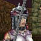

|
それは、ギルドメンバーの集合待ちで暇を持て余していた時、ふとした好奇心から始まった。その時はまさかこれが、あの名高い超ロング極悪クエストにつながろうなどとは思いもしなかったのだ。いやマジで。
俺の名は Shriast、言うまでもないが、Mithaniel Marr に仕える Hall of Truth の パラディンだ。自他共に認めるダンディでもある。こら、ヒゲを引っ張るな、引っ張るなったら。
会いに行ったのは、ギルドトレーナーの Kalatrina Plossen。俺がいつも世話になるトレーナーは Merko Quetalis だから、俺自身は Kalatrina とはあまり面識がない。挨拶をしたことがあった程度だったと思う。丁度こんな風にだ。 |
|  | Kalatrina Plossen | |
| Hail. Welcome to the Hall of Truth. We, the Knights of Truth, are all the hope this city has of loosening the grip of Lucan D'leer and his Militia. I seek a young knight to [ serve the wills of the Truthbringer ]. | ||
| こんにちは、Hall of Truth へようこそ。我々 Knights of Truth は皆々が、この街が Lucan D'leer とその民軍の支配から解き放たれるのを望んでやみません。私はこの [ Truthbringer の命（めい）に仕える ] 若い騎士を捜しているのです。 | ||
|
Truthbringer、すなわち「真理をもたらす者」とは、我らが神 Mithaniel Marr の二つ名。Knights of Truth の名の由来も彼にある。当然、俺は胸を張って答える。 「勿論。Truthbringer の命に仕えましょう」 もっとも、そう大仰なものではない。何も Mithaniel Marr に仕える騎士でなくとも、Hall of Truth にある程度顔が通っていれば誰でも構わない。この誓いの言葉も、ある意味礼儀のようなものだ。 Kalatrina は満足げに微笑んだ。 |
| Stand tall then knight. We have need of your services. We have sent a man to infiltrate the Militia. We fear he may soon be found out. You will take him this note of warning. Say the words, Truth Is Good, and you shall find him. Be careful young knight. The Militia does not take prisoners. | ||
| では立ちあがりなさい、騎士よ。あなたの奉仕が必要なのです。我々はある男を Militia に送り込み、潜入させています。その彼が、間もなく発見されてしまわないか心配なのです。この警告の手紙を、彼に持って行きなさい。合言葉は Truth Is Good、それで彼を見つけ出すことができるでしょう。お気をつけて、若い騎士よ。Militia は捕虜を取るようなことはしないのですから。 |
|
捕虜は作らない・・・・か。その場で即処刑というわけだな。Militiaらしい。とんでもない任務だ。 受け取った手紙を開いてみる。 |
| a sealed letter | ||
|
Your Father, Mithmar | ||
|
あなたの父、 Mithmar | ||
|
なるほど、常套だ。Mithmar・・・・ふふ、Mithaniel Marr か。面白い。 元通りに封をして、俺は目的地へ向かうことにした。 |